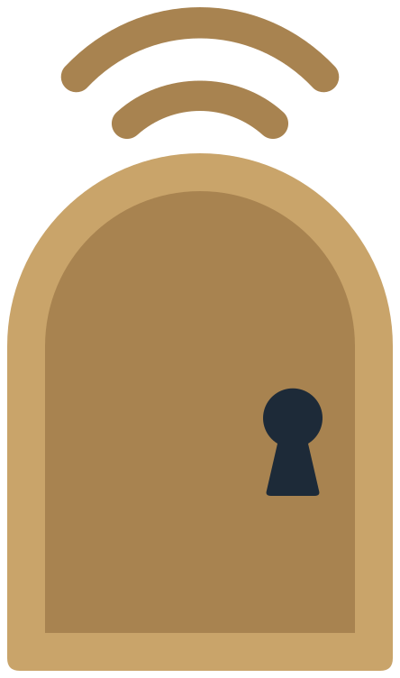

locklyctlSigning in…

locklyctlSigning in…
locklyctl
Choose a door.
Press and hold Unlock (or hold Space) until it fills. Check now wakes the lock, so it beeps.
Choose a person.
If this person also appears under another name, merge them here. This only changes how this app groups people; the locks and Lockly's records stay as they are.
Choose a door.
Finds out which route reaches this lock: the hub relay, or Lockly's device channel. It wakes the lock.
This door has no hub and no Wi-Fi of its own, so there's no route to test: it can only be reached over Bluetooth.
The lock lets people on a schedule in by its own clock. Every status check gives it the time; a check over Bluetooth does too, when its Wi-Fi or hub is down.
The lock also keeps a time zone of its own, which the Lockly app gives it when it's set up and after a firmware update. This gives it the one in the Lockly account, then the time. It wakes the lock.
Give the lock a Wi-Fi network over Bluetooth, next to the door, as the Lockly app's Wi-Fi setup does. Lockly supplies the server it connects to.
Asks Lockly for newer firmware and the lock for what it runs. It wakes the lock.
Signed in as .
Unofficial. Not affiliated with Lockly. Your sign-in and the keys made from it stay on this device.